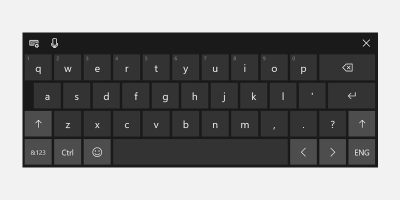
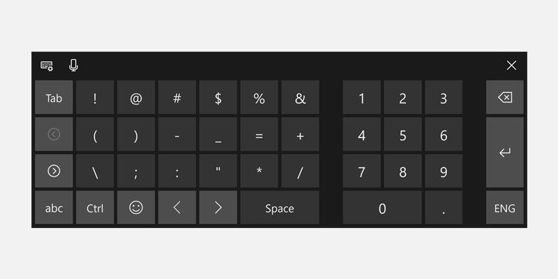
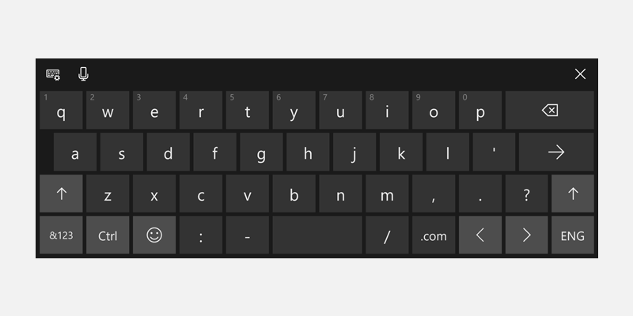
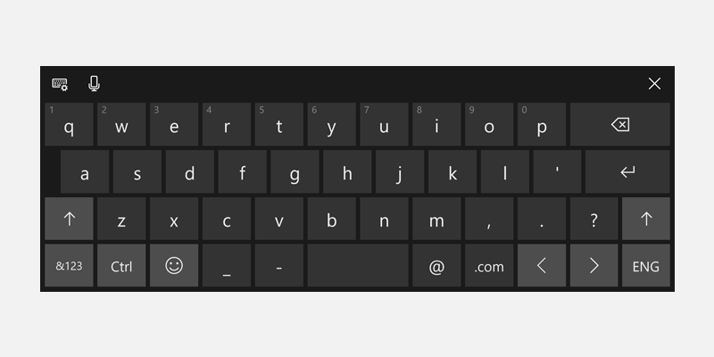
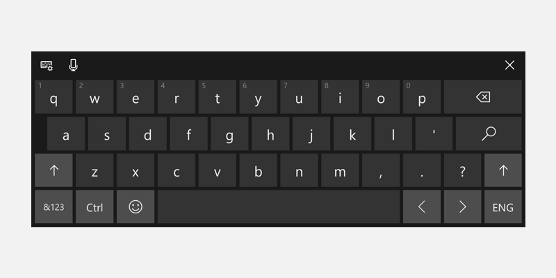
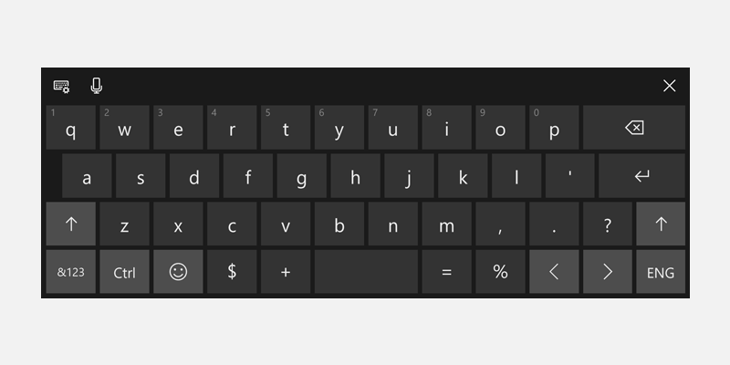

Use input scope to change the touch keyboard
To help users to enter data using the touch keyboard, or Soft Input Panel (SIP), you can set the input scope of the text control to match the kind of data the user is expected to enter.
Important APIs
The touch keyboard can be used for text entry when your app runs on a device with a touch screen. The touch keyboard is invoked when the user taps on an editable input field, such as a TextBox or RichEditBox. You can make it much faster and easier for users to enter data in your app by setting the input scope of the text control to match the kind of data you expect the user to enter. The input scope provides a hint to the system about the type of text input expected by the control so the system can provide a specialized touch keyboard layout for the input type.
For example, if a text box is used only to enter a 4-digit PIN, set the InputScope property to Number. This tells the system to show the number keypad layout, which makes it easier for the user to enter the PIN.
Important
- This info applies only to the SIP. It does not apply to hardware keyboards or the On-Screen Keyboard available in the Windows Ease of Access options.
- The input scope does not cause any input validation to be performed, and does not prevent the user from providing any input through a hardware keyboard or other input device. You are still responsible for validating the input in your code as needed.
Changing the input scope of a text control
The input scopes that are available to your app are members of the InputScopeNameValue enumeration. You can set the InputScope property of a TextBox or RichEditBox to one of these values.
Important
The InputScope property on PasswordBox supports only the Password and NumericPin values. Any other value is ignored.
Here, you change the input scope of several text boxes to match the expected data for each text box.
To change the input scope in XAML
In the XAML file for your page, locate the tag for the text control that you want to change.
Add the InputScope attribute to the tag and specify the InputScopeNameValue value that matches the expected input.
Here are some text boxes that might appear on a common customer-contact form. With the InputScope set, a touch keyboard with a suitable layout for the data shows for each text box.
<StackPanel Width="300"> <TextBox Header="Name" InputScope="Default"/> <TextBox Header="Email Address" InputScope="EmailSmtpAddress"/> <TextBox Header="Telephone Number" InputScope="TelephoneNumber"/> <TextBox Header="Web site" InputScope="Url"/> </StackPanel>
To change the input scope in code
In the XAML file for your page, locate the tag for the text control that you want to change. If it's not set, set the x:Name attribute so you can reference the control in your code.
<TextBox Header="Telephone Number" x:Name="phoneNumberTextBox"/>Instantiate a new InputScope object.
InputScope scope = new InputScope();Instantiate a new InputScopeName object.
InputScopeName scopeName = new InputScopeName();Set the NameValue property of the InputScopeName object to a value of the InputScopeNameValue enumeration.
scopeName.NameValue = InputScopeNameValue.TelephoneNumber;Add the InputScopeName object to the Names collection of the InputScope object.
scope.Names.Add(scopeName);Set the InputScope object as the value of the text control's InputScope property.
phoneNumberTextBox.InputScope = scope;
Here's the code all together.
InputScope scope = new InputScope();
InputScopeName scopeName = new InputScopeName();
scopeName.NameValue = InputScopeNameValue.TelephoneNumber;
scope.Names.Add(scopeName);
phoneNumberTextBox.InputScope = scope;
The same steps can be condensed into this shorthand code.
phoneNumberTextBox.InputScope = new InputScope()
{
Names = {new InputScopeName(InputScopeNameValue.TelephoneNumber)}
};
Text prediction, spell checking, and auto-correction
The TextBox and RichEditBox controls have several properties that influence the behavior of the SIP. To provide the best experience for your users, it's important to understand how these properties affect text input using touch.
IsSpellCheckEnabled—When spell check is enabled for a text control, the control interacts with the system's spell-check engine to mark words that are not recognized. You can tap a word to see a list of suggested corrections. Spell checking is enabled by default.
For the Default input scope, this property also enables automatic capitalization of the first word in a sentence and auto-correction of words as you type. These auto-correction features might be disabled in other input scopes. For more info, see the tables later in this topic.
IsTextPredictionEnabled—When text prediction is enabled for a text control, the system shows a list of words that you might be beginning to type. You can select from the list so you don't have to type the whole word. Text prediction is enabled by default.
Text prediction might be disabled if the input scope is other than Default, even if the IsTextPredictionEnabled property is true. For more info, see the tables later in this topic.
PreventKeyboardDisplayOnProgrammaticFocus—When this property is true, it prevents the system from showing the SIP when focus is programmatically set on a text control. Instead, the keyboard is shown only when the user interacts with the control.
Touch keyboard index for Windows
These tables show the Windows Soft Input Panel (SIP) layouts for common input scope values. The effect of the input scope on the features enabled by the IsSpellCheckEnabled and IsTextPredictionEnabled properties is listed for each input scope. This is not a comprehensive list of available input scopes.
Tip
You can toggle most touch keyboards between an alphabetic layout and a numbers-and-symbols layout by pressing the &123 key to change to the numbers-and-symbols layout, and press the abcd key to change to the alphabetic layout.
Default
<TextBox InputScope="Default"/>
The default Windows touch keyboard.

- Spell check: enabled if IsSpellCheckEnabled = true, disabled if IsSpellCheckEnabled = false
- Auto-correction: enabled if IsSpellCheckEnabled = true, disabled if IsSpellCheckEnabled = false
- Automatic capitalization: enabled if IsSpellCheckEnabled = true, disabled if IsSpellCheckEnabled = false
- Text prediction: enabled if IsTextPredictionEnabled = true, disabled if IsTextPredictionEnabled = false
CurrencyAmountAndSymbol
<TextBox InputScope="CurrencyAmountAndSymbol"/>
The default numbers and symbols keyboard layout.

- Includes page left/right keys to show more symbols
- Spell check: on by default, can be disabled
- Auto-correction: on by default, can be disabled
- Automatic capitalization: always disabled
- Text prediction: on by default, can be disabled
Url
<TextBox InputScope="Url"/>

- Includes the .com and (Go) keys. Press and hold the .com key to display additional options (.org, .net, and region-specific suffixes)
- Includes the :, -, and / keys
- Spell check: off by default, can be enabled
- Auto-correction: off by default, can be enabled
- Automatic capitalization: off by default, can be enabled
- Text prediction: off by default, can be enabled
EmailSmtpAddress
<TextBox InputScope="EmailSmtpAddress"/>

- Includes the @ and .com keys. Press and hold the .com key to display additional options (.org, .net, and region-specific suffixes)
- Includes the _ and - keys
- Spell check: off by default, can be enabled
- Auto-correction: off by default, can be enabled
- Automatic capitalization: off by default, can be enabled
- Text prediction: off by default, can be enabled
Number
<TextBox InputScope="Number"/>
- Spell check: on by default, can be disabled
- Auto-correction: on by default, can be disabled
- Automatic capitalization: always disabled
- Text prediction: on by default, can be disabled
TelephoneNumber
<TextBox InputScope="TelephoneNumber"/>
- Spell check: on by default, can be disabled
- Auto-correction: on by default, can be disabled
- Automatic capitalization: always disabled
- Text prediction: on by default, can be disabled
Search
<TextBox InputScope="Search"/>

- Includes the Search key instead of the Enter key
- Spell check: on by default, can be disabled
- Auto-correction: on by default, can be disabled
- Auto-capitalization: always disabled
- Text prediction: on by default, can be disabled
SearchIncremental
<TextBox InputScope="SearchIncremental"/>
- Same layout as Default
- Spell check: off by default, can be enabled
- Auto-correction: always disabled
- Automatic capitalization: always disabled
- Text prediction: always disabled
Formula
<TextBox InputScope="Formula"/>

- Includes the = key
- Also includes the %, $, and + keys
- Spell check: on by default, can be disabled
- Auto-correction: on by default, can be disabled
- Automatic capitalization: always disabled
- Text prediction: on by default, can be disabled
Chat
<TextBox InputScope="Chat"/>
- Same layout as Default
- Spell check: on by default, can be disabled
- Auto-correction: on by default, can be disabled
- Automatic capitalization: on by default, can be disabled
- Text prediction: on by default, can be disabled
NameOrPhoneNumber
<TextBox InputScope="NameOrPhoneNumber"/>
- Same layout as Default
- Spell check: off by default, can be enabled
- Auto-correction: off by default, can be enabled
- Automatic capitalization: off by default, can be enabled (first letter of each word is capitalized)
- Text prediction: off by default, can be enabled